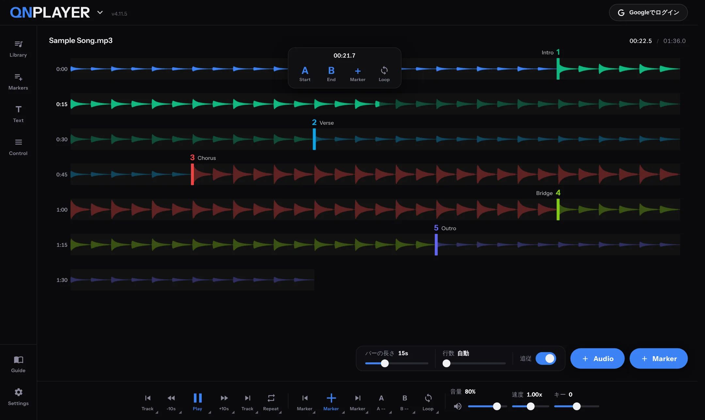
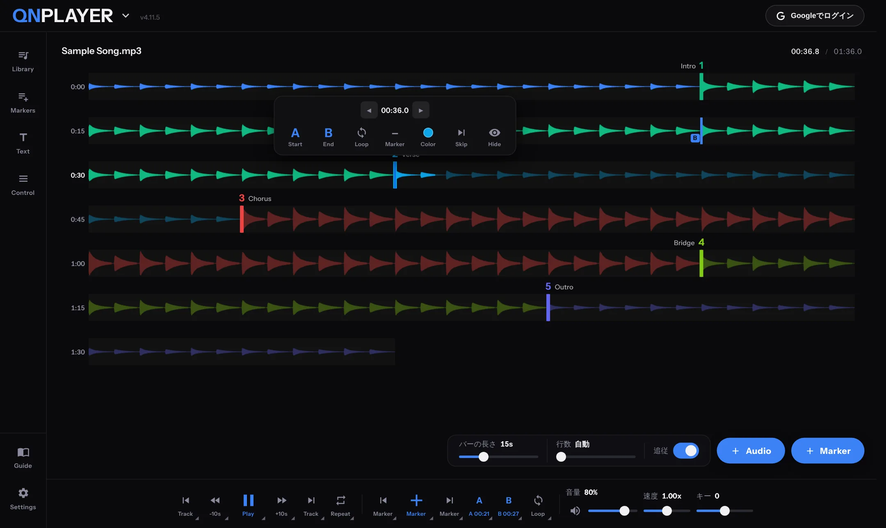
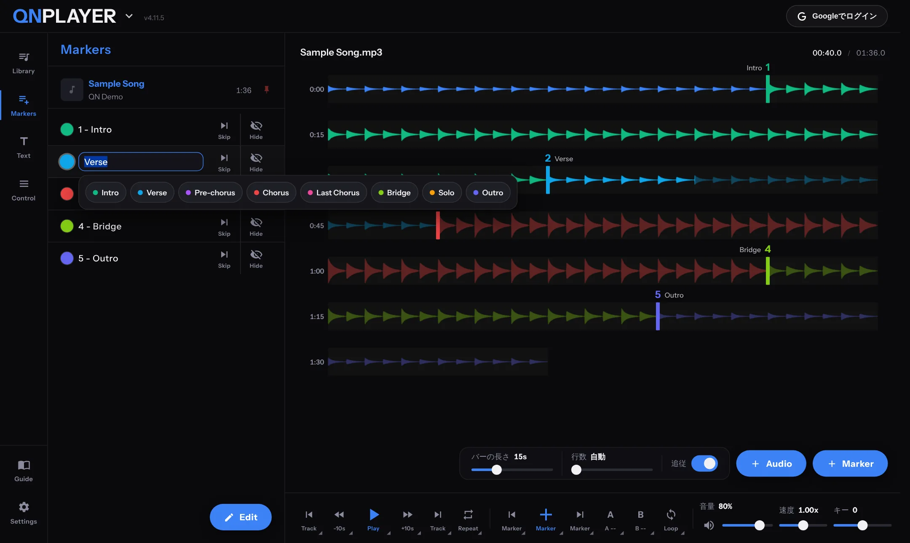
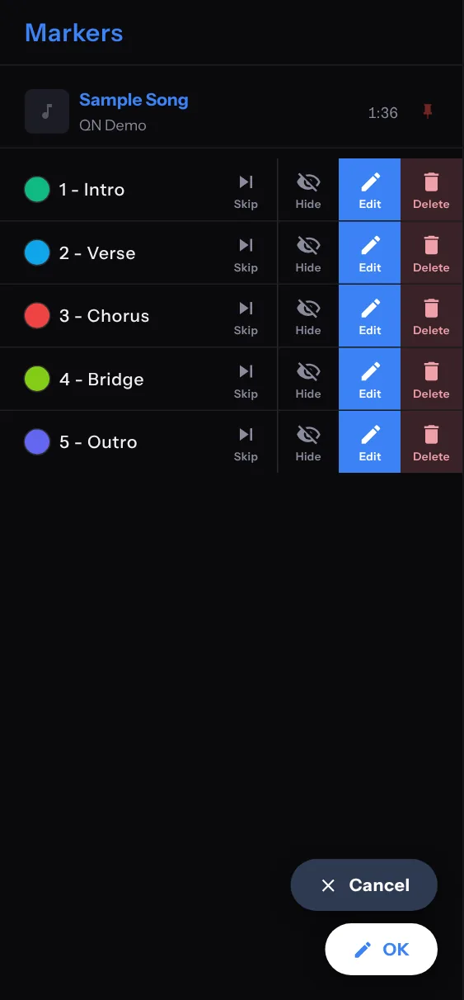
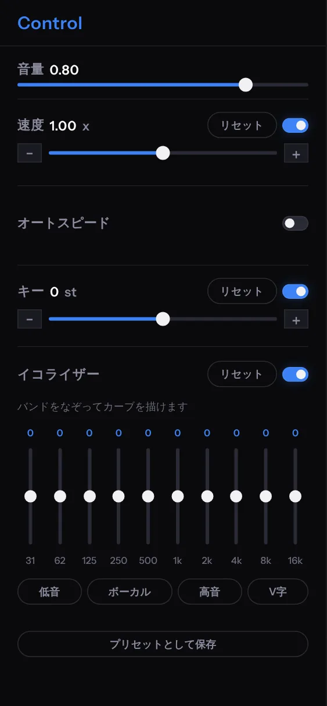
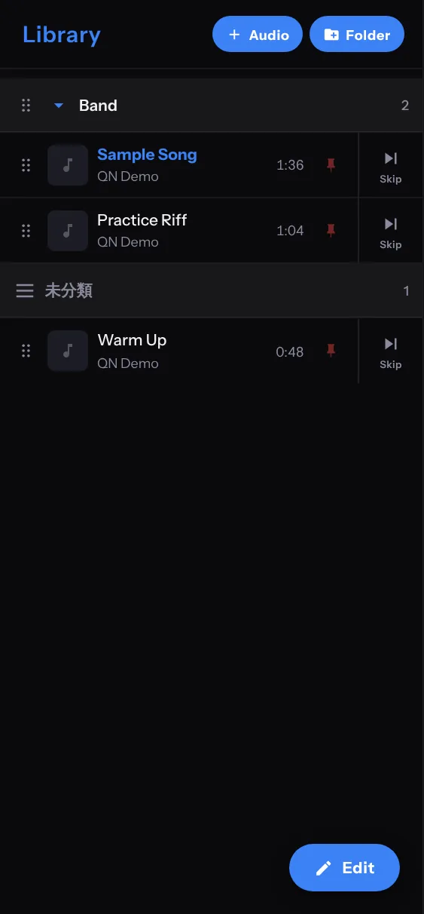
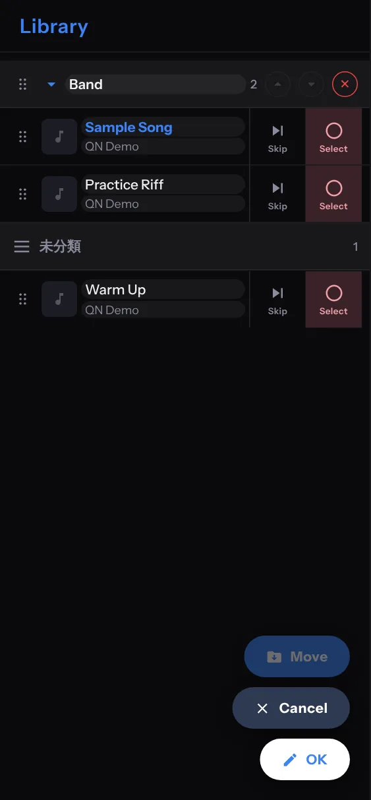
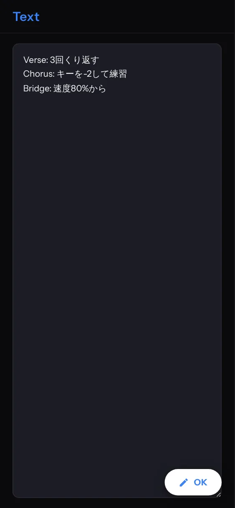

OPERATIONS
操作ガイド
各機能の使い方です。
再生とリピート
- 再生・一時停止は Play ボタン、または Space キーです。Enter キーで曲の先頭に戻ります。
- −10s と +10s で、数秒ぶん戻る・進むことができます。秒数は Settings の「スキップボタン」で 5、10、15、30、60 秒から選べます。
- Track ボタンで前後の曲へ移動します。長押しすると、フォルダや曲の一覧から選んで移動できます。
- Repeat は、押すたびに 1曲、フォルダ、全曲、OFF と切り替わります。OFF のときは、Library を順に再生して、最後で止まります。
- 前・次のマーカーのボタンを長押しすると、前・次の曲へ移ります。スマートフォンでは、シークバーの上の曲名を上へスワイプすると次の曲、下へスワイプすると前の曲へ移ります。
- Speed と Key のバーは、ダブルクリック（スマートフォンではダブルタップ）で、初期値（1.00x、0）に戻ります。
波形シークバー
曲を 1 行ずつに区切って、縦に並べています。行の左には、その行の開始時刻が出ます。


- タップ：その位置から再生します。同時に、ポップアップが開きます。
- ポップアップの A（Start）・B（End）：その位置を A 点・B 点にします。Marker はマーカーを置き、Loop はその位置の区間をくり返します。
- 時刻の左右の矢印で、位置を 0.1 秒ずつ微調整できます。
- マーカーの線をタップすると、Start、End、Loop、Marker（削除）、Color、Skip、Hide のポップアップが開きます。
- マーカーと A・B の旗は、ドラッグして動かせます。
- スマートフォンでは、長押しでマーカーを追加、横スワイプでスクラブ、再生中のダブルタップでその位置で停止します。
- 表示の調整は、Settings の「シークバー」で行います。バーの長さ（1 本の秒数）は 1 秒刻みのスライダーで、波形の形はミラーか下揃えから選びます。バーの長さの横の「Fit」を押すと、曲全体が画面の行数に収まる最小の長さになります。再生位置への追従を切ると、再生しても画面は自動でスクロールしません。自分でスクロールしたあとは、設定した秒数だけ追従を止めます。
マーカー
置く・移動する
- 置く：Marker（＋）ボタン、P / M キー、ポップアップの Marker、スマートフォンの長押し。
- 移動する：→ / ← で次・前のマーカー、↑ / ↓ で最初・最後のマーカーへ。1〜9 で番号のマーカーへジャンプします。
メモと色
Markers の一覧で、色丸をタップするか、Edit から編集を押すと、メモの入力欄とプリセットが開きます。プリセットは Intro、Verse、Pre-chorus、Chorus、Last Chorus、Bridge、Solo、Outro です。選ぶとメモと一緒に、色が自動で付きます。

- 自分用のプリセットは、30 個まで登録できます。
- プリセットの名前と、自動で付く色は、Settings の More にある「カラー」の「マーカーメモの色」で変えられます。
- マーカー 1 つだけ色を変えたいときは、波形上のマーカーの線をタップして、Color を選びます。
Skip と Hide
- Skip：そのマーカーから、次のマーカーまでの区間を、再生中に飛ばします。波形には斜線が出ます。前後のマーカーへの移動でも、Skip のマーカーは飛ばされます。
- Hide：マーカーを一時的に無効にします。区間やループの計算から外れます。もう一度押すと戻ります。Ctrl + 1〜9 でも切り替えられます。
削除する
- Markers の右下の Edit を押します。
- 消したい行の Delete タイルを押して、選びます（選ぶと赤くなります）。
- 右下のボタンが Delete に変わるので、押します。やめるときは Cancel です。

スマートフォンでは、行を横にスワイプすると、編集と削除のボタンが出ます。
ループ
| モード | 動き | 使いどころ |
|---|---|---|
| A-B | A 点と B 点の間をくり返します。A・B は秒数だけを覚えていて、マーカーとは別に曲ごとに保存されます。 | マーカーを置かずに、一時的にワンフレーズを練習するとき |
| Section | マーカーから次のマーカーまでの区間をくり返します。マーカーが 2 個以上必要です。 | Verse や Chorus など、曲の構成ごとに練習するとき |
- Loop ボタンを押すたびに、OFF → A-B → Section → OFF と切り替わります。A 点と B 点が未設定のときは、OFF から Section になります。L キーでも ON/OFF できます。
- A・B ボタンは、押すと現在位置を A 点・B 点にし、もう一度押すと解除します。
- ループの前後に足す余白（0〜5 秒）は、Loop ボタンを長押しするか、Settings の「ループの前後の余白」で変えます。ループの頭で、少し手前から聴きたいときに使います。
Control（音量・速度・キー・EQ）

- 速度：0.5〜1.5 倍です。0.50、0.75、1.00、1.25、1.50 の位置で、スライダーが吸い付きます。−・＋ ボタンの刻みは、Settings の「速度の刻み」で変えられます。リセットで 1.00 倍に戻ります。右のスイッチで ON/OFF できます。
- オートスピード：指定した回数のループごとに、速度を自動で上げる（または下げる）機能です。間隔（何ループごとか）、変化量（何 % ずつか）、上限を決めます。たとえば「5 ループごとに 5 % ずつ、150 % まで」と使います。
- キー：−12〜+12 半音です。0 の位置で吸い付きます。速度を変えても、音の高さは変わりません。
- イコライザー：31 Hz〜16 kHz の 10 バンドで、±15 dB です。バンドをなぞると、カーブを描けます。低音、ボーカル、高音、V字のプリセットと、「プリセットとして保存」で自分用の保存があります。
- パソコンでは、Ctrl + → / ← で速度、Ctrl + ↑ / ↓ でキーを変え、Ctrl + R で両方をリセットします。
Library


- Audio：曲を追加します。Folder：フォルダを作ります。曲名をタップすると再生します。
- 曲名とアーティストは、MP3 のタグから自動で読み取ります。編集して変えられます。
- Edit を押すと、名前の変更、曲の選択、Move（フォルダへ移動）、削除ができます。終わったら OK です。
- 行の左のつまみをドラッグして、曲を並び替えます。別のフォルダへドラッグすると、移動します。フォルダの見出しも、ドラッグで並び替えられます。
- 画鋲のアイコンでピン留めすると、フォルダの先頭に移ります。
- 右の Skip を押すと、その曲を自動送り（次の曲への連続再生）の対象から外します。
- 曲の行を長押しすると、ピン留め、Skip、フォルダへ移動、名前変更、削除のメニューが出ます。削除は、もう一度タップで確定します。スマートフォンでは、行を横にスワイプしても、編集と削除が出ます。
Text

- 曲ごとに、歌詞やメモを書けます。Edit を押して入力し、OK で確定します。
- Full で全画面表示になり、文字の大きさを変えられます。
Stem（パート分離・録音）
お知らせStem は、今のところパソコン専用です。スマートフォンの画面幅では使えません。QNVIDEO（YouTube）の動画にも使えません。
再生中の曲を、ボーカルやドラムなどのパートに分けて、パートごとに音量を変えたり、消したりして練習できます。処理はブラウザの中で行い、音声は外部に送信されません。
- サイドメニューの Stem を開き、Library で曲を選んでから、4 parts または 6 parts を選んで分離を始めます。4 パートは Vocals・Drums・Bass・Other、6 パートはこれに Guitar と Piano が加わります。
- 初回だけ、分離に使うモデルのデータ（数百 MB 程度）をダウンロードします。ブラウザに保存されるので、2 回目以降は再ダウンロードしません。通信量にご注意ください。
- 処理時間は、お使いの端末によって大きく変わります。WebGPU に対応した環境では速く、対応していない環境では CPU で処理するため遅くなります。長い曲は処理できないことがあります（目安：4 パートは 12 分、6 パートは 10 分まで）。
- 分離した結果は、曲ごとにブラウザ内に保存されます。Delete saved parts で消せます。
- Stem mode をオンにすると、元の音源の代わりに、分離したパートが再生されます。パートごとに、Volume、Mute、Solo を使えます。パートごとの波形をクリックすると、その位置へ移動します。
- Volume は 0〜100 で、70 が元の音量です。100 にすると、元の約 3 倍まで大きくできます。
- Stem mode のあいだ、EQ と Key は効きません。Speed、シーク、ループ、マーカーは、いつもどおり使えます。
録音（Rec 1〜4）
- 曲を再生しながら、マイクで録音できます。Record で始め、Stop で止めます。録音は 4 本まで残せます。初回はブラウザからマイクの許可を求められます。
- スピーカーの音を拾わないよう、ヘッドホンを使ってください。
- 録音が曲より遅れる、または早いときは、トラックごとの Delay（−500〜+500 ms）で合わせます。録り直すときは Re-record です。
- 録音も、曲ごとにブラウザ内に保存されます。